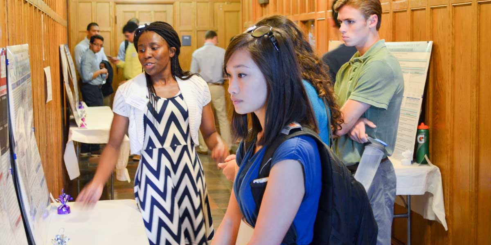

Presenter Information and Guidelines

Frequently Asked Questions
- 1. Who can apply to be a presenter?
All undergraduates currently enrolled at Yale University can apply for YURS 2016.
- 2. Can I apply if I don’t do research in fields like biology, chemistry and physics?
Yes, Yes, Yes! We encourage students doing research in ANY field to apply to YURS. This includes the arts, humanities, social sciences, sciences, engineering, mathematics, and many others.
- 3. What if I am not done with my research by the registration deadline?
That’s okay! If you are not finished with your research by the deadline, please submit a description of the project you have been conducting, along with your hypothesis/expectations and your current progress/results. You’ll have some more time to finish your project, as final posters for selected presenters will be due later in August.
- 4. Can I present research that was not conducted at Yale?
Absolutely! Research conducted anywhere by Yale undergraduates is eligible for submission to YURS.
- 5. Are group project submissions allowed?
It is perfectly fine to register for the conference as a group! It is up to you to decide how you would like to structure your presentation. You can present individually or as a group for the poster presentation if selected. Please indicate if how you intend to present in your application.
-->